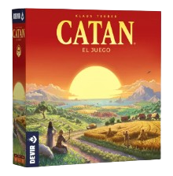
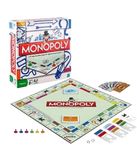
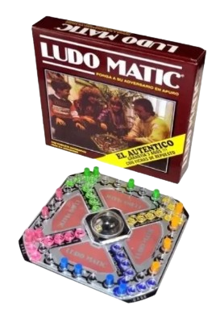
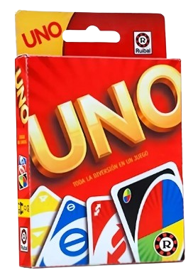
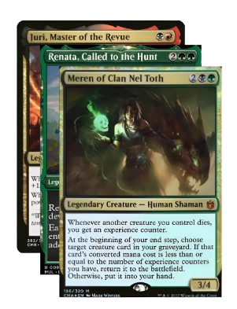
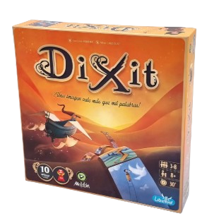

Juegos de mesa.
Catan:
Catan (anteriormente Los Colonos de Catan) es un popular juego de mesa de estrategia y gestión de
recursos creado por Klaus Teuber en 1995. De 3 a 4 jugadores compiten por colonizar la isla de
Catan, construyendo caminos, poblados y ciudades para ganar puntos, siendo el primero en alcanzar 10
puntos el ganador

Enlace a la compra
Monopoly
Monopoly es un popular juego de mesa inmobiliario y de estrategia donde los jugadores compiten por
acumular riqueza comprando propiedades, casas y hoteles, con el objetivo de llevar a la bancarrota a
sus oponentes.
Creado inicialmente por Elizabeth Magie como crítica al capitalismo, hoy es un ícono
de Hasbro

Enlace de compra.
Ludo Matic
El Ludo Matic es una versión moderna y popular del clásico juego de mesa Ludo (o Parchís), cuya
principal
característica distintiva es la inclusión de un cubilete automático central.
Características
Cubilete "Pop-up": En lugar de lanzar los dados con la mano, el tablero tiene una semiesfera de
plástico
transparente en el centro. Al presionarla, un resorte hace saltar el dado en su interior, evitando
que
este se pierda o ruede fuera de la mesa.
Jugadores: Está diseñado para 2 a 4 jugadores.
Componentes: El juego incluye un tablero plástico o de cartón, el sistema de dado automático y 16
peones(4 de cada color: rojo, azul, amarillo y verde).
Objetivo: Al igual que en el Ludo tradicional, el objetivo es recorrer todo el tablero con tus 4
fichas y llegar a la meta antes que los demás, basándote en el azar del dado.

Enlace de compra de Ludo Matic en Mercado Libre
Juegos de mesa(Cartas)
UNO!
UNO es un popular juego de cartas estadounidense de ritmo rápido, comercializado por Mattel, donde el objetivo principal es ser el
primero en quedarse sin cartas en la mano. Utiliza una baraja especial de 108 cartas de colores
(rojo, azul, verde, amarillo 🟥🟨🟩🟦) con números y cartas de acción especial (salto, reversa, toma
dos, comodines).
Aspectos clave
Objetivo: Quedarse sin cartas. Cuando a un jugador le queda una sola carta, debe gritar "¡UNO!"
.Mecánica: Los jugadores emparejan una carta de su mano con la carta superior del mazo de descartes,
ya sea por color, número o símbolo.
Cartas Especiales: Incluyen Reversa (cambia sentido), Salto (pierde turno), Toma Dos (+2), Comodín
(cambia color) y Comodín Toma Cuatro (+4).
Origen: Creado en 1971 por Merle Robbins en Ohio.
.El juego termina cuando un jugador se queda sin cartas.

Oferta
de Mercado Libre
Magic
Magic: The Gathering (MTG) es el pionero de los juegos de cartas coleccionables, creado en 1993 por
Richard Garfield. Los jugadores asumen el rol de magos (Planeswalkers) que se enfrentan en duelos,
utilizando mazos personalizados para reducir los 20 puntos de vida del oponente a cero, invocando
criaturas y lanzando hechizos.
Características Principales:
Mecánica de Juego: Se basa en el uso de cartas de "tierras" para generar maná, el recurso necesario
para jugar hechizos, criaturas, y otras acciones.
Coleccionable e Intercambiable: Existen miles de cartas diferentes, lo que permite a los jugadores
construir estrategias únicas y coleccionar cartas raras.
Colores de Magia: El juego se divide en cinco colores (Blanco, Azul, Negro, Rojo, Verde), cada uno
con su propia filosofía, criaturas y estilo de estrategia.
Formatos: Se puede jugar en persona con cartas físicas o en línea a través de plataformas como Magic:
The Gathering Arena.
Objetivo: El objetivo principal es derrotar al oponente reduciendo sus vidas a 0, aunque también se
puede ganar si el rival se queda sin cartas en su baraja.
Se trata de un juego de estrategia profunda que combina habilidad, construcción de mazos y suerte.

Enlace
a M en ML
Dixit
Dixit es un galardonado juego de cartas de deducción y creatividad para 3-8 jugadores, donde el
objetivo es adivinar imágenes surrealistas basadas en pistas narrativas. Un jugador
("cuentacuentos") describe una carta, y los demás eligen cartas propias que encajen, puntuando
quienes aciertan la original. Gana quien llega primero a 30 puntos.
Componentes: Incluye 84 cartas con ilustraciones artísticas, conejos de madera para marcar puntos y
fichas de voto.
Mecánica principal: El cuentacuentos dice una frase, canción o palabra que describa su carta.
Puntuación: Si todos o nadie aciertan, el cuentacuentos no suma y los demás obtienen puntos. Si solo
algunos aciertan, el cuentacuentos y ellos puntúan.
Edad y duración: Recomendado para mayores de 8 años, con partidas de unos 30-45 minutos.
Expansiones: Existen múltiples expansiones (cartas nuevas) para aumentar la rejugabilidad.
Es ideal para fomentar la imaginación y la interacción social, utilizado a menudo por su
versatilidad artística.

Enlace
a ML para gastar dinerillo.